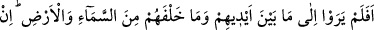
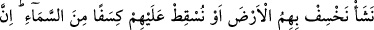
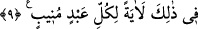
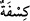
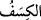
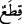
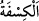

Yeşerirken yeşilliğe bakmasını söyle
Çünkü sonbahar sonrası birkaç gül açar
Bahar mevsiminde ise yer şarap gibi coşar
9. Onlar, gökte ve yerde önlerine ve arkalarına bakmıyorlar mı? Dilesek onları
yere batırırız, ya da üzerlerine gökten parçalar düşürürüz. Şüphesiz bunda
(Rabbine) yönelen her kul için bir ibret vardır.
“Onlar, gökte ve yerde önlerine ve arkalarına bakmıyorlar mı?” “Fâ” harfi
mukadder bir cümleye atıf içindir. Yâni onlar azabı peşinden getiren böyle çirkin işler
mi yaptılar ki kendilerine hiç kaçacak yer bırakmayan, kendilerini her taraftan kuşatan
göğe ve yere bakmıyorlar mı? Çünkü onlar nerede olurlar ve ne tarafa giderlerse gökler
ve yerler onların önlerinde, arkalarında, sağlarında ve sollarındadır.
Sonra Allah Teâlâ gökler ve yer tarafından gelecek beklenen tehlikeyi beyan etti ve
şöyle buyurdu:
İşledikleri suçların gereği olarak “dilesek” Kârun’u yere batırdığımız gibi “onları
yere batırırız, ya da” işledikleri cürümler sebebiyle hak ettikleri için Eyke halkının
üzerine düşürdüğümüz gibi “üzerlerine gökten parçalar düşürürüz.”
“
” kelimesinin çoğulu olan “
” kelimesi lâfız ve mânâ bakımından “
”
kelimesi gibidir. el-Müfredât’ta der ki: “
”nin mânâsı bulut, pamuk ve benzeri
seyreltilmiş cisimlerden bir parça demektir.”
Gökten parçalar düşürmenin mânâsı ateşten parçalar düşürmektir. Nitekim Şuayb
(a.s.)’ın kavmi olan Eyke halkı böyle helâk olmuştur. Bu kavim bağlar, bahçeler, ağaç
ve ormanlara sahipti. Allah Teâlâ onlara şiddetli bir sıcak gönderdi. Sonra bir bulut
gördüler, gölgelenmek üzere bulutun altında toplandılar. Bulut onların üzerine ateş
yağdırdı da yanıp kül oldular.
“Şüphesiz bunda” bakanı her yönden kuşatması bakımından zikredilen gökte ve yerde
veya zikredilenleri ifâde eden tilâvet olunan bu vahiyde “(Rabbine) yönelen” şânı,
inâbe ve Rabbine dönmek olan “her kul için bir ibret” açık bir delâlet “vardır.” Çünkü
kul göğü ve yeri ya da zikredilen vahyi düşündüğünde çirkin işleri yapmaktan geri durur
ve Allah Teâlâ’ya yönelir.
el-Müfredât’ta der ki: “
” bir şeyin tekrar tekrar geri dönmesidir. Allah’a inâbe
ise tevbe ile ve ameli hâlis kılarak Allah’a dönmektir.”